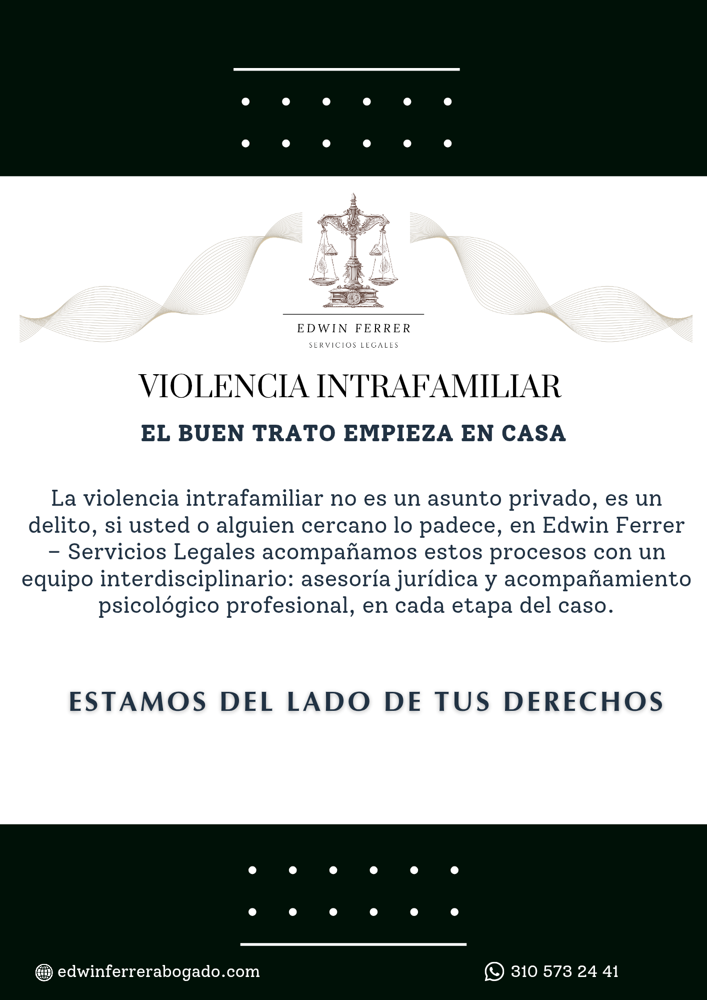

Derecho penal, familia, público y acciones constitucionales. Su defensa, del lado correcto de la ley.
Mensajes de solidaridad y acompañamiento ante hechos que afectan a nuestra región, al país o al mundo.

El buen trato empieza en casa. La violencia intrafamiliar no es un asunto privado, es un delito. Si usted o alguien cercano lo padece, en Edwin Ferrer — Servicios Legales acompañamos estos procesos con un equipo interdisciplinario: asesoría jurídica y acompañamiento psicológico profesional, en cada etapa del caso.
Edwin Iván Ferrer Barreto es abogado egresado de la Universidad Cooperativa de Colombia, con ejercicio en Girardot, Ibagué y El Espinal para asuntos en Tolima y Cundinamarca. Cuenta con más de 10 años de experiencia en litigio de derecho penal y familia, y más de 9 años asesorando al sector público.
Ha acompañado a entidades como la Gobernación del Tolima, las alcaldías municipales de El Espinal y Girardot, y la Personería Municipal de Girardot, en procesos catastrales, saneamiento y titulación de predios, formulación y seguimiento de políticas públicas, y atención de derechos de petición y acciones de tutela.
Detrás de cada concepto y cada escrito hay un mismo compromiso: mantenerse siempre actualizado, para ofrecerle una defensa sólida, clara y confiable.
Seis frentes de trabajo, cada uno con su propio procedimiento y sus propios términos.
Defensa técnica en todas las etapas del proceso penal, desde la indagación hasta el juicio, y representación de víctimas.
Procesos administrativos y judiciales de custodia y cuidado personal, régimen de visitas y fijación de cuota alimentaria; sucesiones y régimen de apoyos para el ejercicio de la capacidad legal.
Representación y conceptos ante entidades del orden municipal, departamental y nacional.
Acciones de tutela, populares y de cumplimiento para la protección de derechos fundamentales y colectivos.
Regularización, saneamiento y titulación de bienes inmuebles urbanos y rurales.
Formulación, implementación y seguimiento de políticas públicas para entidades territoriales.
Reflexiones periódicas sobre temas de actualidad jurídica.
Tolima es hoy el epicentro nacional de los incendios forestales, con más de la mitad de los municipios del país en alerta roja. El marco normativo ya existe — lo que falta es la ambición.
La Ley No Más Olé y la Sentencia C-374 de 2025 sellaron el fin de las corralejas en Colombia. El Espinal tiene el sabor, la música y la memoria para construir una nueva identidad festiva antes de 2028 — si actúa a tiempo.
El problema de fondo no es solo de honestidad — es de preparación. Un concejal no ejecuta obras: aprueba el presupuesto, hace control político y representa a la comunidad. Es un trabajo técnico, y así debería elegirse.
Algunos resultados recientes en procesos y gestiones representativas.
Acción de tutela y seguimiento sostenido a través de incidentes de desacato para garantizar un servicio de cuidador permanente a un paciente en condición de discapacidad severa, en Ibagué, Tolima.
Liderazgo técnico en la formulación de la política pública departamental para la Gobernación del Tolima, con un hallazgo propio sobre focalización territorial.
Coordinación general del proceso de actualización, en convenio con FICAT, con elaboración del plan metodológico y sesiones de concertación con las comunidades indígenas del departamento.